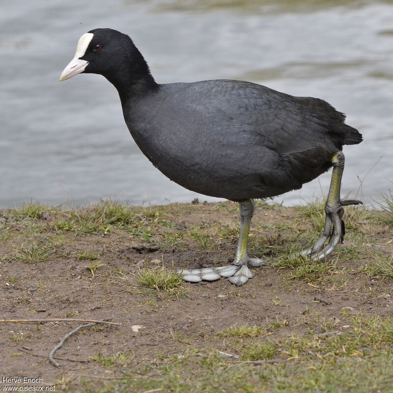

Accenteur mouchet
L'Accenteur mouchet a la taille du Rougegorge familier, mais pas son allure. Il évoque un moineau par son manteau brun chaud marqué de noir, d'où une possible confusion, mais il s'en distingue immédiatement par la finesse de son bec. Chez l'adulte, un gris de cendre envahit la tête et la poitrine, et les flancs présentent des flammèches brun-roux. Sur le dessus, les grandes couvertures et les tertiaires présentent une pointe pâle formant une esquisse de barre sur les premières. L'iris est noisette. Les pattes sont jaunâtres ou rougeâtres, la queue entièrement brun sombre. De loin, il se présente comme un petit oiseau uniformément sombre. Il n'y a pas de dimorphisme sexuel marqué. Le mâle est simplement d'un gris plus appuyé. Il existe de petites différences de couleur suivant les sous-espèces. Le juvénile montre très peu de gris dans le plumage et sa poitrine est fortement striée de brun. Son iris est plus clair ainsi que son bec.
Les huit sous-espèces actuellement décrites ne diffèrent entre elles que par des détails comme un plumage plus ou moins sombre ou un gris de tête plus ou moins étendu et prononcé.

Chouette hulotte
La Chouette hulotte est une chouette de taille moyenne (envergure de 95 à 105 cm) inféodée aux milieux forestiers du paléarctique occidental. L'espèce présente deux morphes de plumage, un gris et un roux, comme beaucoup d'autres rapaces nocturnes.
L'adulte de morphe gris a un plumage brun-gris marqué de taches brun sombre et claires qui rompent la continuité et le rendent très cryptique. Une bande blanche ou crème est particulièrement visible au niveau des scapulaires externes. Le dessous est blanc à beige clair, strié et barré plus discrètement de brun. La grosse tête arrondie porte un masque facial pâle à contours arrondis bien développé. Il est coupé en son centre par une ligne sombre qui rejoint le bec. Il présente de légers cercles concentriques autour des gros yeux sombres. Le bec, surmonté par un X blanc est couleur paille.

Foulque macroule
La Foulque macroule est une grande "poule d'eau", plus grande que la Gallinule poule d'eau et moins discrète. Elle a un plumage très sombre, gris-anthracite, qui peut paraître noir de loin, et sur ce noir tranchent un bec et une plaque frontale blancs. Ce blanc est nuancé de rose chez l'adulte nuptial. Le corps est ramassé et compact. Les ailes sont courtes et arrondies et épousent la forme du corps. Déployées, elles montrent des rémiges pâles dessous, et dessus pour les secondaires. Les pattes sont un peu disproportionnées par leur adaptation à la nage. Les doigts ont des phalanges lobées natatoires assez spectaculaires. Tarse et pied sont gris clair, avec des bandes jaunes et même un peu de rouge orange vers le talon.
Le pullus à l'éclosion est comique. Il est couvert de duvet noir sur le corps, mais sa tête est bariolée de rouge, orange, jaune et violet. Le second duvet sera gris et les couleurs de la tête disparaîtront au profit du gris dessus et du blanchâtre dessous. Le juvénile a un plumage bicolore, gris moyen nuancé de brun dessus et blanchâtre dessous. Le bec est jaunâtre et noirâtre. Dès l'été, le bec s'éclaircit, devenant rosâtre tandis que la plaque frontale grandit. Le jeune oiseau deviendra adulte d'aspect dans le courant de l'automne.

Pigeon ramier
Le Pigeon ramier est un grand pigeon, le plus grand du paléarctique occidental. Outre sa grande taille, on le reconnaît à sa silhouette allongée à longue queue, à la grande marque blanche qui orne la base de son cou de chaque côté et, en vol, à la bande blanche qui coupe l'aile en son milieu au niveau du poignet sur les couvertures. Au posé, elle se résoud à un fin trait blanc sur le bord antérieur de l'aile fermée.
Chez l'adulte, la tête et les parties supérieures sont d'un gris bleuté assez clair. Les parties inférieures sont d'un gris plus clair, avec une nette teinte vineuse ou mauve sur toute la poitrine et la base du cou. À bonne lumière, les côtés du cou paraissent nettement striés. Les deux taches blanches s'inscrivent dans un contexte d'irisations roses, pourpres, vert clair et vert sombre du plus bel effet. Les rémiges sont gris sombre avec des liserés blanchâtres. Le queue est typique. Les rectrices sont grises dessus avec une large bande terminale noire. Dessous, elles sont barrées en leur milieu d'une large bande blanche, bien visible en vol.
L'iris est d'un jaune très pâle, presque blanc, entouré d'un cercle orbitaire gris. Le bec est rose-pourpre à la base, jaune à son extrémité, et la cire est blanche. Les tarses et les doigts sont roses. Les sexes sont pratiquement semblables. Le mâle a en moyenne les taches blanches du cou plus développées et la poitrine plus vivement colorée que la femelle.
Les 5 sous-espèces décrites se distinguent par de légères différences de couleur du plumage et des parties nues.

Grive musicienne
La Grive musicienne est d'une taille un peu inférieure à celle du Merle noir qu'elle côtoie souvent, mais la confusion n'est pas possible. C'est un oiseau plus trapu, avec une queue plus courte et un plumage plus clair. Les parties supérieures sont d'un brun assez chaud et sont assez uniformes d'aspect. Une nuance roussâtre est perceptible sur la calotte et les ailes tandis que le bas du dos, le croupion et les sus-caudales paraissent un peu plus gris. L'œil sombre est cerclé de pâle, ce qui le fait paraître grand. Le sourcil chamois est très peu marqué, ce qui la distingue de sa cousine mauvis. Les couvertures auriculaires chamois sont entourées de brun.
Enfin, les traits malaires noirâtres, bien marqués, se rejoignent sous la gorge pour former une sorte de collier tacheté. Les parties inférieures sont roussâtres sur la poitrine et les flancs, et blanc-crème sur le ventre et les sous-caudales. Des taches brun-noir en forme de V, ou de cœur, renversés, constellent la poitrine, le haut du ventre et les flancs. Les pattes sont roses. le bec est brunâtre avec la base de la mandibule inférieure jaune. Au vol, on distingue les couvertures sous-alaires orange pâle.

Héron cendré
Le Héron cendré est un de nos plus grands Ardéidés, le plus grand d'Europe. On le reconnaît justement à sa grande taille, à sa teinte grise et, au vol, à sa silhouette particulière.
Le plumage est gris moyen sur les parties supérieures et blanc dessous. Les plumes de vol, rémiges et rectrices, sont noirâtres, d'où un contraste typique entre elles et le reste du corps qui se voit bien en vol.
Le plumage gagne en netteté chez l'adulte. Les bords de la calotte deviennent bien noirs et se prolongent en petite huppe. Le bec jaunit, le devant du cou égrène de nettes stries noires, une tache blanche apparaît au poignet au-dessus des petites couvertures noires, les scapulaires s'allongent, les pattes s'éclaircissent. C'est ce plumage qui prévaut une grande partie de l'année, mais dans le courant de l'hiver, le plumage nuptial va se développer chez l'adulte reproducteur.
Le bec devient jaune orange, les lores bleuissent, la huppe noire s'allonge, de longues plumes ornementales poussent au bas du cou et au niveau des scapulaires, les pattes jaunissent encore. Le mâle se distingue alors de la femelle par ses teintes plus vives. Tous ces atours contribueront à la mise en valeur de l'adulte au moment des parades nuptiales.
Le juvénile et l'immature ont un plumage qui ressemble à celui de l'adulte inter-nuptial, mais plus terne, avec la partie supérieure du bec et les pattes sombres.

Pic épeiche
Le Pic épeiche est le plus commun et le plus répandu des pics dits bigarrés, au plumage coloré de noir, blanc et rouge.
Le dimorphisme sexuel est faible. Le mâle adulte se distingue à sa zone occipitale rouge cramoisi alors qu'elle est noire chez la femelle.
Les parties supérieures (manteau, dos, croupion et sus-caudales) sont noires. Les ailes noires présentent une large tache blanche sur les épaules, formée par les scapulaires externes et les grandes et moyennes couvertures internes. Toutes les rémiges sont noires et munies de taches blanches sur leur longueur formant barres alaires. Les deux paires de rectrices centrales sont noires et les trois paires externes de plus en plus blanches de l'intérieur vers l'extérieur.
La tête porte une calotte noire entre le front beige roussâtre clair et l'arrière rouge ou noir. Les côtés de la tête et du cou sont blancs, marqués d'un Y noir dont les branches rejoignent respectivement le bec (en une moustache noire), la nuque et la poitrine (la branche inférieure amorçant un bandeau pectoral). Une bride noire joint la nuque au manteau, noir lui aussi.
Les parties inférieures sont blanches, excepté le bas-ventre et les sous-caudales rouge cramoisi.
Le bec, fort et pointu, est noir. Les yeux rouge sombre ressortent bien dans la zone lorale blanche. Les fortes pattes griffues sont grises.

Pic noir
Avec une longueur de 45 à 50 cm, le Pic noir est l'un des plus grands pics au monde. Il est aisément reconnaissable à la couleur noire de son plumage. La seule partie vivement colorée chez l'adulte est la calotte. Le mâle l'a entièrement rouge vif tandis que la femelle n'a ce rouge que sur le tiers postérieur. Elle est légèrement érectile. Le bec est couleur ivoire à pointe sombre. L'iris de l'œil est blanc. Les pattes sont claires, un peu de la couleur du bec.
Le juvénile est d'un gris de suie. Son bec est rosâtre et son iris gris.

Pic vert
Le Pic vert est un pic d'assez grande taille, au plumage à dominante verte qui lui a donné son nom. C'est ce qu'on remarque en premier quand on est confronté à cette espèce. Ensuite, c'est le rouge vif de la tête qui saute aux yeux.
Le vert nettement nuancé de jaune couvre le dessus du corps, de la nuque à la queue, ainsi que les couvertures alaires. Le croupion et les sus-caudales apparaissent nettement plus jaunes. Les rémiges et les rectrices, d'un brun grisâtre, sont nettement barrées de noirâtre. Les rémiges secondaires et tertiaires sont largement ourlées de vert-jaune.
Les parties inférieures sont d'un blanc grisâtre avec une nuance jaune qui augmente en intensité de l'avant vers l'arrière. Ainsi, la gorge et les joues sont blanchâtres tandis que le bas ventre est nettement jaune, mais il y a des variations individuelles. Les plumes de l'arrière des flancs et les sous-caudales, jaunâtres et bordées de noirâtre, donnent un aspect écailleux.
La tête tricolore, rouge, noir et blanc, est remarquable. Les deux sexes possèdent une calotte rouge vif qui gagne la nuque, une couleur noire sur les lores, le pourtour des yeux et les moustaches, enfin la gorge et les parotiques blanchâtres. L'iris blanc ressort bien sur la joue noire. Le bec est jaunâtre ou corne, à pointe sombre.

Pie bavarde
Il n'est nul besoin de décrire la Pie bavarde qui se reconnaît au premier coup d'œil à sa silhouette et à son plumage. Il suffit de regarder les photos ci-contre. Tout le monde peut mettre un nom immédiatement sur cet oiseau à longue queue caractéristique. D'ailleurs son nom fait référence quand on parle d'un animal noir et blanc, par exemple un cheval pie.
Inutile donc de partir dans une longue description. Les images suffisent. Notons simplement les caractéristiques "corvidé" à savoir la grande taille, le bec et les pattes robustes.
Les sexes sont semblables. À bonne lumière, le noir du plumage adulte présente des reflets bleus, indigo, violets, vert-bronze du plus bel effet.
Le juvénile a une queue plus courte, le noir du plumage couleur suie avec des reflets atténués, le blanc très légèrement teinté de roussâtre et le tour de l'œil clair faisant ressortir ce dernier.
Actuellement, 6 sous-espèces sont reconnues. Elles diffèrent légèrement par la taille et les proportions respectives du blanc et du noir dans le plumage, essentiellement au niveau des primaires et du croupion. Auparavant, elles étaient plus nombreuses, mais 4 taxons ont été élevés au rang d'espèce.